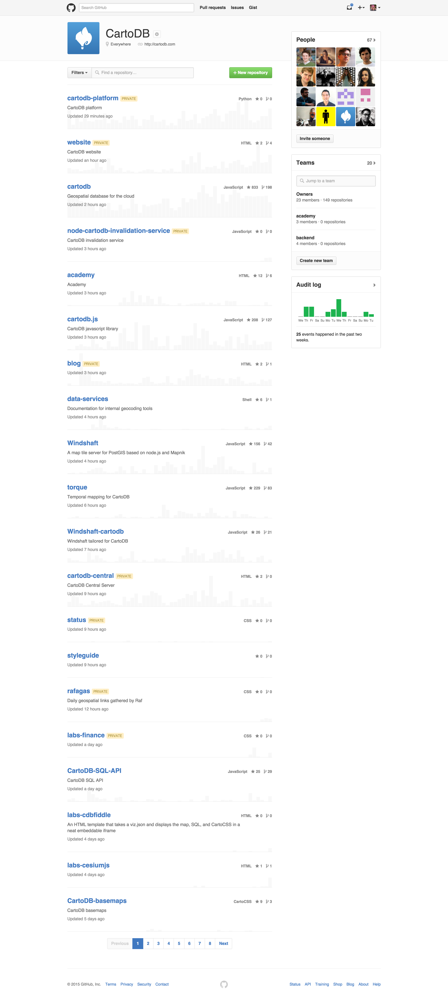
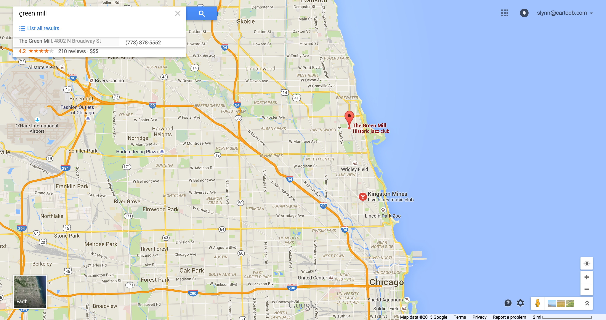
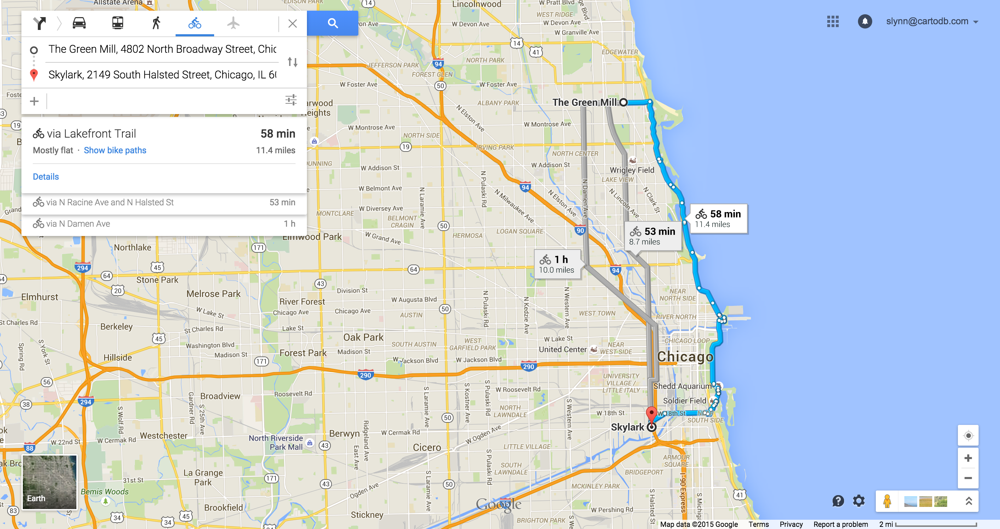
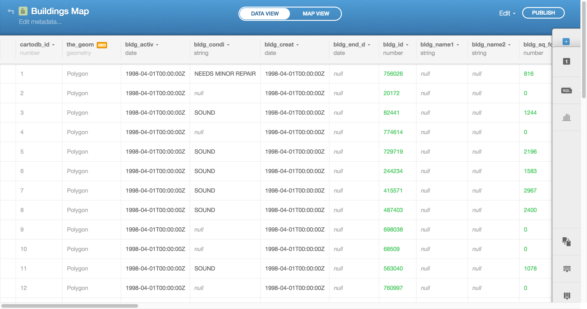
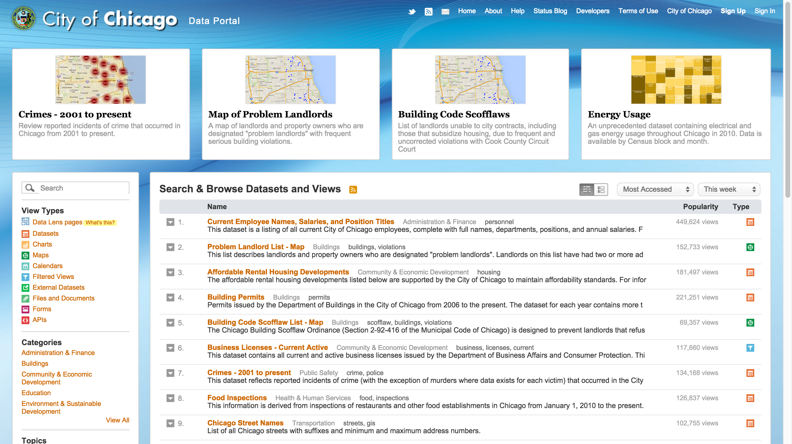

Beautiful Maps on the Web
Beyond simple markers
Stuart Lynn
Map Scientist

+

=
Your guess is as good as mine
CartoDB

Aggressively Open source
Maps are great!
Help us find places(bars)
Help us navigate to places(other bars)
Maps can also be beautiful


Basemaps
http://openwhatevermap.org/
Points on a map
Choropleth
Directions of US rivers
Ages of buildings in Chicago
Animated maps with Torque
Even non-earth based maps
Data
Query
SELECT * FROM buildings where shape_area > 100
Carto CSS
/** choropleth visualization */
#buildings{
polygon-fill: #91003F;
polygon-opacity: 0.8;
line-color: #FFF;
line-width: 0;
line-opacity: 1;
}
#buildings [ year_built <= 2013] {
polygon-fill: #F1EEF6;
}
#buildings [ year_built <= 1990] {
polygon-fill: #D4B9DA;
}
#buildings [ year_built <= 1967] {
polygon-fill: #C994C7;
}
#buildings [ year_built <= 1944] {
polygon-fill: #DF65B0;
}
#buildings [ year_built <= 1920] {
polygon-fill: #E7298A;
}
#buildings [ year_built <= 1897] {
polygon-fill: #CE1256;
}
#buildings [ year_built <= 1874] {
polygon-fill: #91003F;
}
Live Demo
Cartodb.js
Getting it on to your site
Interacting with other code
// create a layer with 1 sublayer
cartodb.createLayer(map, {
user_name: 'mycartodbuser',
type: 'cartodb',
sublayers: [{
sql: "SELECT * FROM table_name",
cartocss: '#table_name {marker-fill: #F0F0F0;}'
}]
})
.addTo(map) // add the layer to our map which already contains 1 sublayer
.done(function(layer) {
// create and add a new sublayer
layer.createSubLayer({
sql: "SELECT * FROM table_name limit 200",
cartocss: '#table_name {marker-fill: #F0F0F0;}'
});
// change the query for the first layer
layer.getSubLayer(0).setSQL("SELECT * FROM table_name limit 10");
});
Just the data
var sql = new cartodb.SQL({ user: 'cartodb_user' });
sql.execute("SELECT * FROM table_name WHERE id > {{id}}", { id: 3 })
.done(function(data) {
console.log(data.rows);
})
.error(function(errors) {
// errors contains a list of errors
console.log("errors:" + errors);
})
Stories
Odyssey.js